This following sections describe how the basic PID VIs (not including PID Advanced, PID Advanced Autotuning, and other VIs with advanced options) implement the PID algorithm, and the assumptions and transformations necessary to implement the PID controller. To implement a PID controller, LabVIEW requires the algorithm to sample the input signals and discretize the integral and derivative action.
|
Note��The following formulas apply to most VIs on the PID palette. The PID Advanced and PID Advanced Autotuning VIs use extended formulas with more advanced optional features. |
The following simulation diagram represents the PID implementation provided by the basic PID VIs:
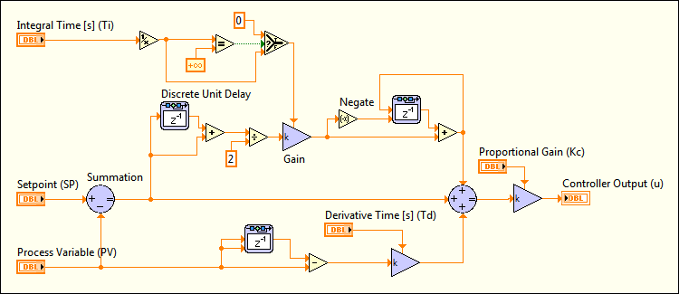
|
Note��Constructing a simulation diagram like the one in the previous image requires the LabVIEW Control Design and Simulation Module. However, the PID VIs implement PID controllers for you. You do not need the Control Design and Simulation Module to build PID controllers. Refer to the National Instruments website at ni.com for more information about the Control Design and Simulation Module. |
The following formula represents the current error used in calculating proportional, integral, and derivative action:
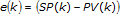
| where | k is the index of the sampled signal at time k*t |
| e(k) is the current error | |
| SP is the setpoint | |
| PV is the process variable |
Proportional action is the controller gain times the error, as shown in the following formula:
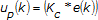
| where | Kc is the controller gain |
| e(k) is the current error |
The PID VIs express the proportional component in terms of controller gain. The relationship between controller gain (Kc) and proportional band (PB) is Kc = 100 / PB.
There are several options for discretizing integral action, such as forward difference, backward difference, and trapezoidal approximation, which is also known as Tustin or Bilinear transformation. The PID VIs use trapezoidal integration to avoid sharp changes in integral action when there is a sudden change in PV or SP, as represented by the following formula:
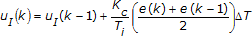
| where | ΔT is the sampling time of the controller |
Abrupt changes in SP can generate bumps to the output of the controller as a result of applying derivative action to the error e. These bumps are referred to as derivative kick. To avoid derivative kick, you can apply derivative action to the PV only, and not to the error e. The following formula represents the derivative action implemented by the PID VIs, which avoids derivative kick:
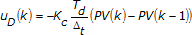
Controller output is the summation of the proportional, integral, and derivative action, as shown in the following formula:
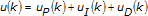
The actual controller output is limited to the range specified for control output.
| If | 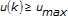 | then | 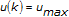 |
and
| if | 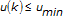 | then | 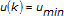 |
The PID VIs use an integral sum correction algorithm that facilitates anti-windup. Windup occurs at the upper limit of the controller output. When the error e decreases, the controller output decreases, moving out of the windup area. The integral sum correction algorithm prevents abrupt controller output changes when you switch from manual to automatic mode or change any other parameters. The integral sum correction works as follows:
| If | 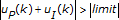 | then | 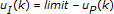 |
The previous statement demonstrates that the integral sum correction does not take into account the derivative action on value changes.
The default ranges for the parameters SP, PV, and output range correspond to percentage values. However, you can use actual engineering units. Adjust corresponding ranges accordingly. The parameters Ti and Td are specified in minutes.
You can call the PID VIs from inside a While Loop with a fixed cycle time. All the PID VIs are reentrant. Multiple calls from high-level VIs use separate and distinct data. Also, the PID VI has a multi-channel mode where you provide an array that represents an input for each channel.
PID gains can change at any time. When a change is detected, the PID algorithm tries to perform a bumpless transition by adjusting the integral action to keep the output constant with the new parameters. This avoids output changes when you try to modify the PID parameters, and is useful in gain scheduling.
Gain scheduling refers to a system where you change controller parameters based on measured operating conditions. For example, the scheduling variable can be the setpoint, the process variable, a controller output, or an external signal. For historical reasons, the term gain scheduling is used even if other parameters such as derivative time or integral time change. Gain scheduling effectively controls a system with dynamics that change with operating conditions.
With the PID Gain Schedule VI, you can define unlimited sets of PID parameters for gain scheduling. For each schedule, you can use autotuning to update the PID parameters.
 Add�
Add�
 Find
Find